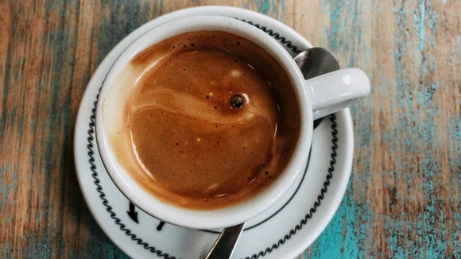
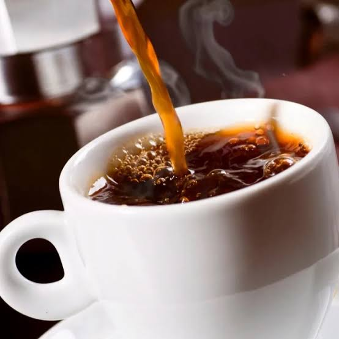
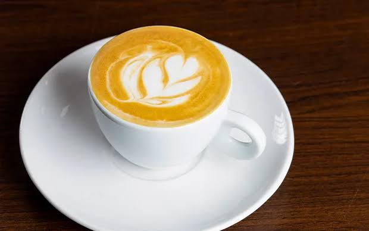
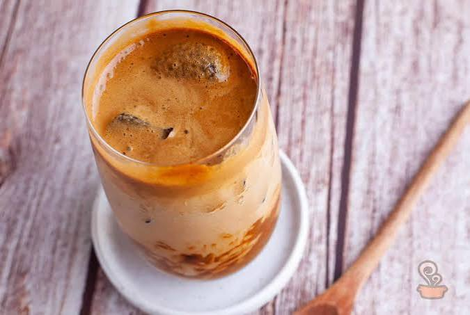
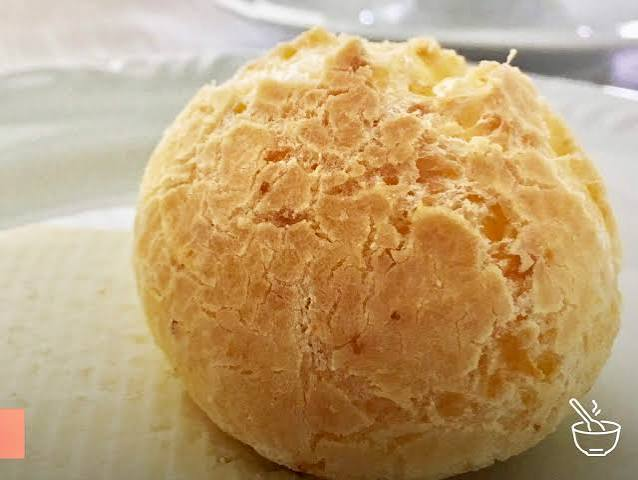
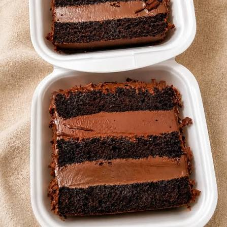

Espresso
Encorpado, com notas de chocolate amargo.
R$ 6,00Grãos selecionados de pequenas fazendas, torrados em lotes de poucos quilos e entregues frescos na sua casa.
Ver cardápioO Café Serra nasceu em uma cozinha pequena, com uma torra de um quilo por vez. Hoje seguimos a mesma regra: comprar direto do produtor, provar cada lote e só vender o que gostaríamos de beber em casa.
Trabalhamos com grãos de altitude, colhidos à mão e secos ao sol. Cada pacote traz a data da torra, a fazenda de origem e notas de sabor para você escolher com segurança.
Nosso compromisso é simples: pagar preço justo ao produtor, torrar com cuidado e explicar tudo com clareza.

Encorpado, com notas de chocolate amargo.
R$ 6,00
Suave e limpo, com acidez cítrica leve.
R$ 8,00
Espresso, leite vaporizado e espuma cremosa.
R$ 12,00
Extração a frio por 12 horas, doce e refrescante.
R$ 14,00
Assado na hora, crocante por fora e macio por dentro.
R$ 7,00
A receita muda a cada semana. Pergunte no balcão.
R$ 10,00Os frutos maduros são colhidos à mão, um a um.
Os grãos secam ao sol em terreiros por até 20 dias.
Torramos em pequenos lotes e provamos cada um.
O pacote sai em até dois dias após a torra.
250 g por mês, torra clara e adocicada.
R$ 39,00500 g por mês, torra média e corpo macio.
R$ 69,001 kg por mês, torra escura e bem encorpada.
R$ 119,00O melhor coado que já tomei fora de casa. Voltei toda semana.
Gosto de saber a fazenda e a data da torra em cada pacote.
O pão de queijo com espresso virou meu café da manhã.
Recomendamos consumir em até 30 dias após a torra para sentir todo o sabor.
Sim. Basta avisar como você prepara: coador, prensa francesa ou máquina.
Tem. Os cafés puros e o gelado são feitos só com água e grãos.
Pode, com dois dias de antecedência. Fale com a equipe no balcão.
Entregamos os pacotes de grãos. Bebidas e lanches são só no local.